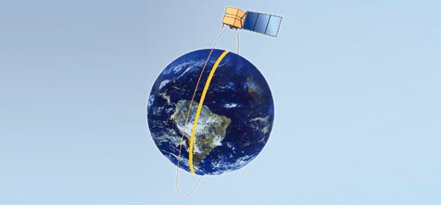
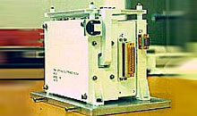
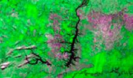

Os satélites CBERS-1 e 2 são compostos por dois módulos. O módulo "carga útil" acomoda os sistemas ópticos (CCD – Câmera Imageadora de Alta Resolução, IRMSS – Imageador por Varredura de Média Resolução e WFI – Câmera Imageadora de Amplo Campo de Visada) usadas para observação da Terra e o Repetidor para o Sistema Brasileiro de Coleta de Dados Ambientais. O módulo "'serviço" contém os equipamentos que asseguram o suprimento de energia, os controles, as telecomunicações e demais funções necessárias à operação do satélite. O satélite CBERS-2B é muito semelhante aos CBERS-1 e 2, mas o IRMSS é substituído pela HRC - Câmera Pancromática de Alta Resolução. Detalhes adicionais podem ser obtidos em: http://marte.sid.inpe.br/col/dpi.inpe.br/sbsr@80/2008/11.18.12.46/doc/2001-2008.pdf Os 1100 W de potência elétrica necessários para o funcionamento dos equipamentos de bordo são obtidos através de painéis solares, que se abrem quando o satélite é colocado em órbita e se mantêm continuamente orientados na direção do Sol por controle automático. Para cumprir os rigorosos requisitos de apontamento das câmeras necessários à obtenção de imagens de alta resolução, o satélite dispõe de um preciso sistema de controle de atitude. No caso do CBERS-2B, uma melhoria significativa é a instalação de um receptor de GPS (Global Positioning System) e de um sensor de estrelas para assistir os mecanismos de controle de atitude. Esse sistema é complementado por um conjunto de propulsores a hidrazina que também auxilia nas eventuais manobras de correção da órbita nominal do satélite. Os dados internos para monitoramento do estado de funcionamento do satélite são coletados e processados por um sistema distribuído de computadores antes de serem transmitidos à Terra. Um sistema de controle térmico ativo e passivo provê o ambiente apropriado para o funcionamento dos sofisticados equipamentos do satélite.
A órbita do CBERS é heliossíncrona a uma altitude de 778 km, perfazendo aproximadamente 14 revoluções por dia. Nesta órbita, o satélite cruza o Equador sempre na mesma hora local, 10h30 da manhã, permitindo assim que se tenham sempre as mesmas condições de iluminação solar para a comparação de imagens tomadas em dias diferentes.
Os satélites CBERS-1, 2 e 2B são equipados com câmeras para observações ópticas de todo o globo terrestre, além de um sistema de coleta de dados ambientais. São sistemas únicos devido ao uso de câmeras que combinam características diversas para resolver a grande variedade de fenômenos que ocorrem em escalas temporais e espaciais típicas de nosso ecossistema. Os satélites CBERS-1, 2 e 2B caracterizam-se por estarem em uma órbita síncrona com o Sol a uma altitude de 778 km, completando 14 revoluções da Terra por dia. Este tipo de órbita é tal que o satélite sempre cruza o Equador às 10h30 da manhã, hora local, provendo assim as mesmas condições de iluminação solar para tornar possível a comparação de imagens adquiridas em dias diferentes. Uma característica importante dos satélites CBERS-1, 2 e 2B são a diversidade de câmeras com diferentes resoluções espaciais e freqüências de coleta de dados.
A câmera WFI produz imagens de uma faixa de 890 km de largura, permitindo a obtenção de imagens com resolução espacial de 260 m. No período aproximado de cinco dias obtém-se uma cobertura completa do globo.
A câmera de varredura IRMSS tem quatro faixas espectrais e estende o espectro de observação do CBERS até o infravermelho termal. O IRMSS produz imagens de uma faixa de 120 km de largura com uma resolução de 80 m (160 m no canal termal). Em 26 dias obtém-se uma cobertura completa da Terra, que pode ser correlacionada com aquela obtida através da câmera CCD. Está presente nos CBERS-1 e 2, mas não no CBERS-2B; neste, foi substituído pela HRC (Câmera Pancromática de Alta Resolução).
Vista do Baixo Vale do Rio Açu no litoral do Rio Grande do Norte com o IRMSS
.jpg)
Vista do Baixo Vale do Rio Açu no litoral do Rio Grande do Norte com o IRMSS
A câmera HRC opera numa única faixa espectral, que cobre o visível e parte do infravermelho próximo. Está presente apenas no CBERS-2B, mas não nos CBERS-1 e 2. Produz imagens de uma faixa de 27 km de largura com uma resolução de 2,7 m, que permitirá a observação com grande detalhamento dos objetos da superfície. Como sua faixa de cobertura é de 27 km, serão necessários cinco ciclos de 26 dias para que os 113 km padrão da CCD sejam cobertos pela HRC. Assim, a cada 130 dias será possível ter uma cobertura completa do país, para ser correlacionada com aquela obtida pela câmera CCD, que neste período terá coberto o país por cinco vezes